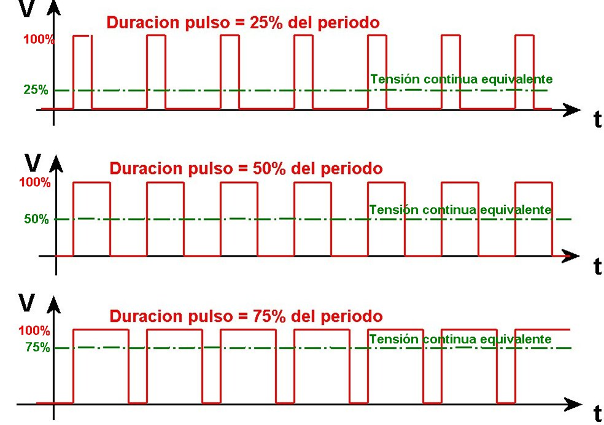
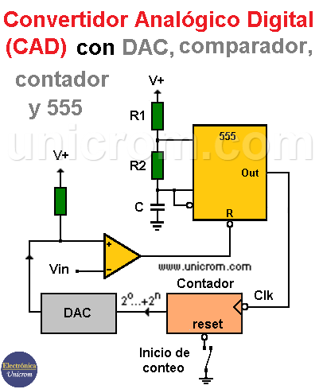

Señales Electrónicas
Las señales electrónicas son representaciones físicas de datos que se envían o reciben a través de un sistema eléctrico o electrónico. Estas señales pueden ser de diversos tipos, como analógicas o digitales, y son fundamentales para la comunicación en dispositivos modernos.

Señales de Entrada y Salida
Las señales de entrada y salida son parte integral de cualquier sistema electrónico. Las señales de entrada son las que el sistema recibe del entorno, mientras que las señales de salida son aquellas que el sistema emite tras procesar la información. Estas señales pueden ser eléctricas, ópticas, acústicas o de otro tipo, dependiendo del dispositivo.

Procesamiento de Señales
El procesamiento de señales es el conjunto de operaciones matemáticas y técnicas que se aplican a una señal para mejorarla, modificarla o extraer información de ella. Este proceso es esencial en la transmisión de datos, la reproducción de audio, la comunicación inalámbrica, entre otros campos.

Variables Análogas y Electrónicas
Las variables análogas y electrónicas se refieren a las magnitudes que cambian continuamente (análogas) o discretamente (digitales). Las señales analógicas pueden tomar cualquier valor dentro de un rango continuo, mientras que las señales electrónicas (digitales) toman valores discretos, típicamente representados por 0 y 1.

Señales PWM y su Modulación
Las señales PWM (Pulse Width Modulation) son una forma de señal digital donde el ciclo de trabajo se modula para representar una señal de control. Estas señales se utilizan para controlar motores eléctricos, regular voltajes o controlar la intensidad de luces LED.
En la modulación PWM, la señal cambia entre estados altos y bajos, pero se ajusta el tiempo en que la señal permanece en estado alto (duty cycle), lo que permite regular la potencia entregada a una carga.

Comunicación Serial de Señales
La comunicación serial es un método de transmisión de datos en el que los bits se envían secuencialmente a través de un solo canal. A diferencia de la comunicación paralela, que envía varios bits simultáneamente, la comunicación serial envía un bit a la vez, lo que la hace más adecuada para largas distancias.
Es común en interfaces como UART, SPI e I2C, utilizadas en sistemas embebidos para enviar información entre microcontroladores y dispositivos periféricos. Aunque es más lenta que la comunicación paralela, es más eficiente en términos de costo y distancia.

Conversor Analógico-Digital (ADC)
El conversor analógico-digital (ADC) convierte señales analógicas en digitales para que puedan ser procesadas por dispositivos electrónicos. El proceso de conversión sigue los siguientes pasos:
1. Muestreo
La señal analógica se toma en intervalos regulares de tiempo. Este proceso genera una serie de muestras que representan la amplitud de la señal en diferentes momentos.
2. Cuantificación
Las muestras obtenidas se redondean a los valores más cercanos en un conjunto finito de niveles discretos. Este paso introduce un error llamado "error de cuantificación".
3. Codificación
Los niveles cuantificados se codifican en formato binario para que puedan ser interpretados por dispositivos digitales como microprocesadores o computadoras. El resultado es una secuencia de bits que representa la señal original.

Volver